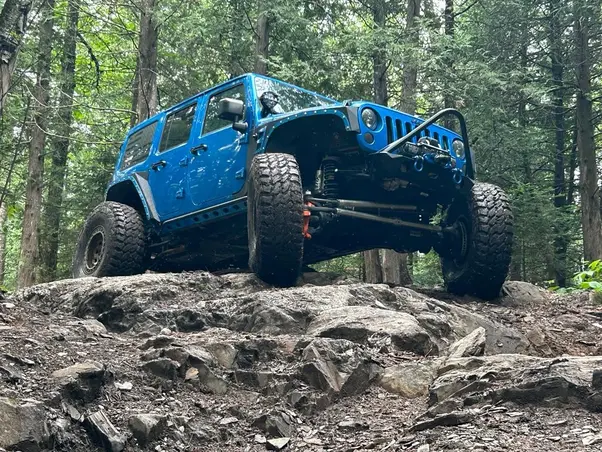
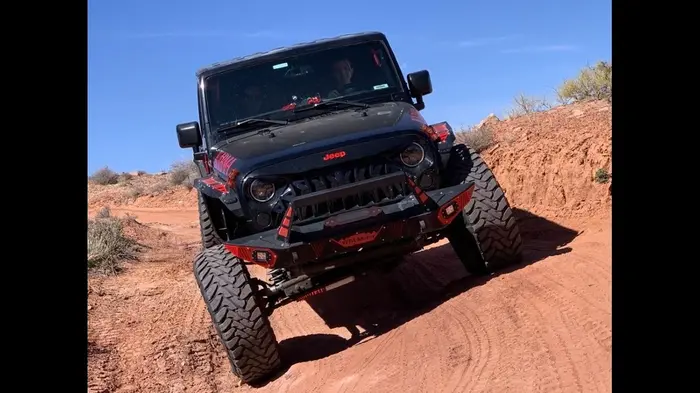
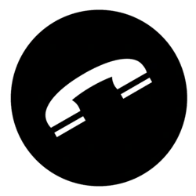

Children in the foster system, especially teens, have a very rough start to their lives; without much direction of where they can go.
Second Chance is about giving them that direction, a chance to learn valuable skills whilst working towards a college centered future.
This is done through the hard work of rebuilding and fixing up jeeps, which are then sold and used for scholarship money so the teen may attend college.



Learn More About Second Chance

Cory's Phone Number
(563)-258-3504
Email
reynolds_racing@yahoo.com